Newsroom
Worth passing on.
What operators are sharing. We keep them. Newest first.
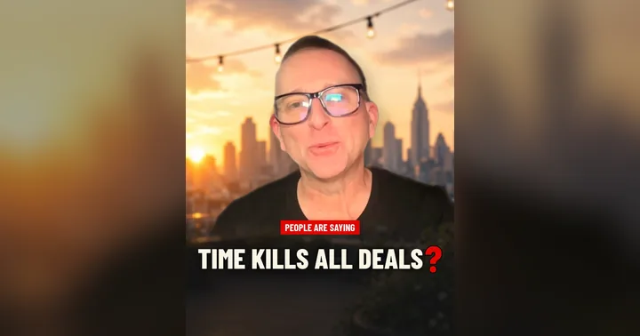
People Are Saying, Episode 1: Does time kill all deals?
Justin Weller takes a line founders keep hearing and says whether it holds up in sales.
Founders Ramp on LinkedIn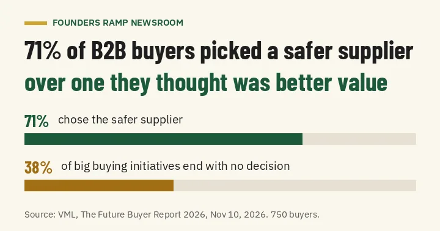
71% of B2B buyers have chosen a safer supplier over one they believed offered better value
VML released The Future Buyer Report 2026 on November 10, 2026. It surveyed 750 enterprise B2B buyers across seven industries in eight markets, including the United States, between late July and early August 2026. 55% of buyers begin supplier research with generative AI tools, compared with 45% who start with traditional search engines. 73% believe an underperforming purchase could affect their career, and 71% have chosen a safer supplier over one they believed offered better value. 38% of significant buying initiatives end without a decision. VML calls this defensibility bias. A founder selling against a known incumbent can make the choice easier to defend: proof from similar customers, a small first commitment and a clear plan for what happens if it misses.
VML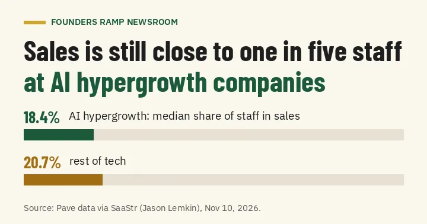
Sales is 18.4% of headcount at AI hypergrowth companies, close to 20.7% in the rest of tech
Jason Lemkin wrote on SaaStr on November 10, 2026 about new data from Pave's compensation database of more than 10,000 companies. The median share of the workforce in sales is 18.4% at AI hypergrowth companies, 20.7% in the rest of tech and 10.4% at non-technology companies. Customer support is 1.8% of headcount at AI hypergrowth companies against 4.4% in the rest of tech, and engineering is 47% against 33.9%. Lemkin also cites ICONIQ's State of Go-to-Market 2026, where AI-forward teams report 67% quota attainment against 59% for everyone else. His read: these companies have fewer reps because they have fewer employees overall, and sales keeps most of its share. For a founder, AI tools change how a first seller spends the day, and the companies growing fastest still hire sellers.
SaaStr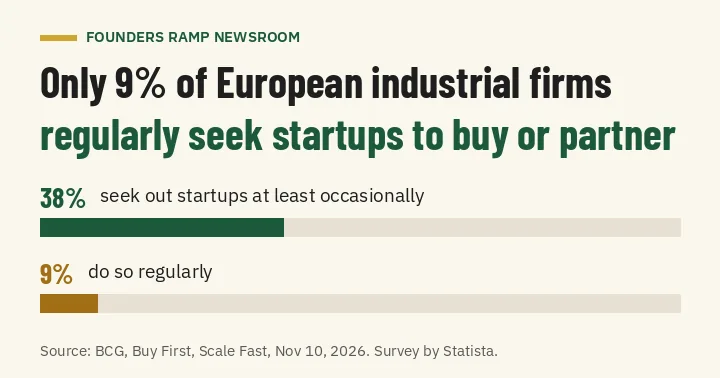
Only 9% of European industrial companies regularly seek out startups to buy from or partner with
BCG released its study Buy First, Scale Fast on November 10, 2026. Statista surveyed 370 people from business and research for BCG between September 9 and October 16, 2026, including 185 senior industry executives. 38% of executives said their company seeks contact with startups for purchases or partnerships at least occasionally, and 9% said it does so regularly. Three quarters of the companies have tried partnering with young tech firms, and 19% report mostly successful results from repeated work together. Before buying more from tech startups, 51% want to be sure the technology works reliably, 35% want lower financial risk, 31% need compatibility with existing IT systems and 25% want simpler internal procurement and approval. A founder selling to a large company can answer all four up front: a scoped pilot, references, an integration plan and a short path through procurement.
BCG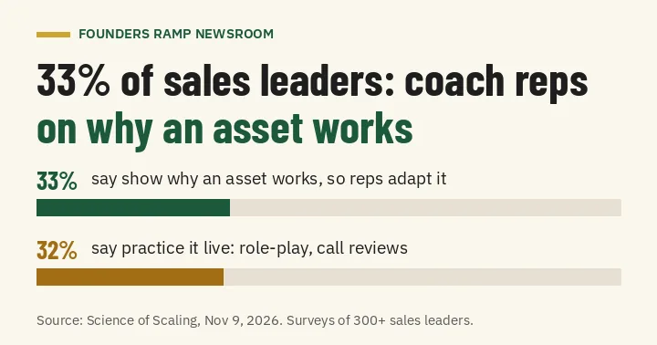
33% of sales leaders say the best way to coach reps on messaging is to show why it works
The Science of Scaling newsletter by Jay Fuchs, published November 9, 2026, draws on surveys of more than 300 sales leaders, with data sourced through Panoplai. Asked how managers best coach reps to use marketing's messaging, 33% chose showing why an asset works so reps can adapt it themselves, and 32% chose live practice such as role-play and call reviews. Asked for the single biggest barrier to getting more value from AI in prospecting, 32% named reps treating AI as a shortcut. On the habits that separate reps who use marketing well, 28% of first-place votes went to tailoring material to the specific buyer and 23% to knowing what assets exist and where to find them. When a founder hands the pitch to a first seller, walking through why each story wins gives that seller something to adapt on every call.
Science of Scaling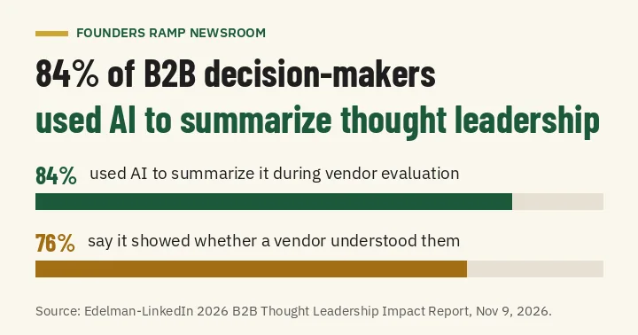
84% of B2B decision-makers used AI to summarize vendors' thought leadership during evaluation
Edelman described its just-released 2026 Edelman-LinkedIn B2B Thought Leadership Impact Report on November 9, 2026. The survey covers more than 1,100 business executives across seven countries. During vendor evaluation, 84% of B2B decision-makers used AI to summarize thought leadership. Of those who shared it, 89% did so through private channels such as email, direct messages, work chats and meetings. 76% say thought leadership discussed in their buying group helped them judge whether a vendor understood their needs, and 59% of final decision-makers say poor or absent thought leadership contributed to a vendor being removed from consideration. Asked what builds the most trust, 56% chose a clear understanding of their challenges and 14% chose the strength of the product. Write about the buyer's problem in enough depth that a summary still carries your point.
Edelman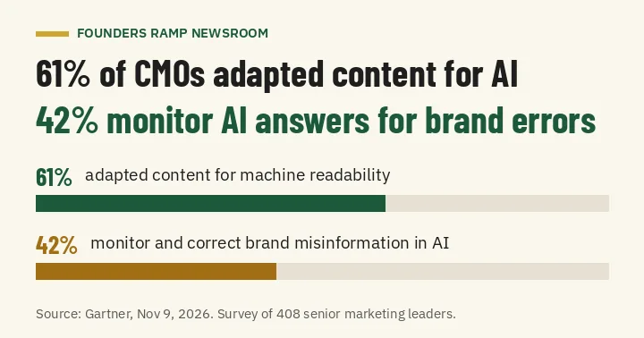
42% of CMOs now monitor and correct what AI says about their brand
Gartner released a survey of 408 senior marketing leaders on November 9, 2026, conducted from July through August 2026. 42% of CMOs said they have taken steps to monitor and correct misinformation about their brands in AI-generated output. 61% have adapted content strategies to improve machine readability and visibility in AI-driven experiences, and 94% plan to increase investment in human touchpoints over the next year. Gartner analyst Sharon Cantor Ceurvorst said that as B2B buyers rely on AI tools to discover and evaluate brands, inaccurate information can directly influence perceptions and purchasing decisions. A small team can start simply: ask the main AI assistants what they say about your company, then correct the facts on your own site.
Gartner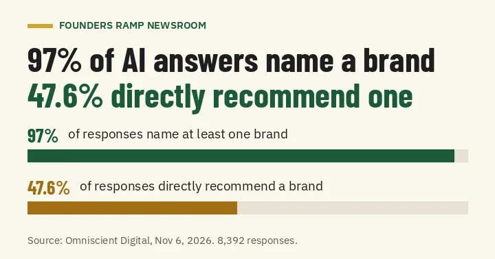
AI answers named brands in 97% of responses, but directly recommended one in only 47.6%
Omniscient Digital published original research on November 6, 2026, analyzing 8,392 AI responses to 300 buying prompts across four AI search platforms. The prompts ran from September 30 to October 6, 2026. At least one brand appeared in 97% of responses, while only 47.6% included a direct recommendation. The study covers software, consumer products, financial services and professional services. It measures model answers, rather than purchases or revenue. Before counting an AI mention as a win, check whether the answer actually tells your target buyer to consider you.
Omniscient Digital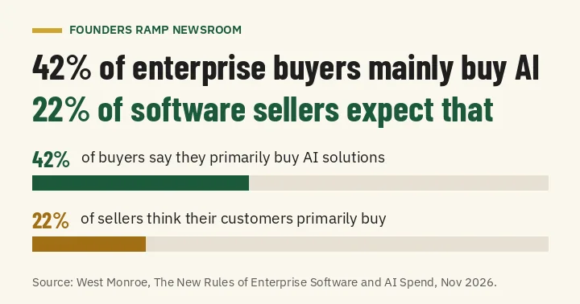
42% of enterprise software buyers mainly buy their AI tools, and only 22% of software sellers expect that
West Monroe surveyed 300 U.S. executives in Q3 2026, enterprise software buyers and software sellers, and published the results on November 5, 2026. 42% of buyers say they primarily buy AI solutions, and only 22% of sellers believe their customers primarily buy. Buyers lean toward predictable pricing: 33% prefer enterprise subscriptions and 24% prefer usage based pricing. 36% of sellers think buyers want hybrid pricing with an outcome based part. Before you set your first pricing model, ask five buyers how they want to pay and price to their answer.
West Monroe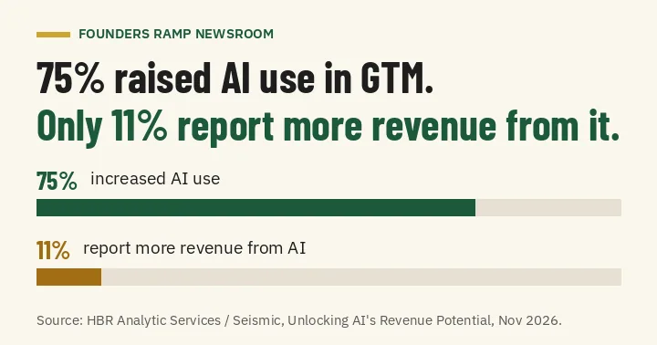
75% of B2B GTM teams increased AI use, and only 11% report more revenue from it
Harvard Business Review Analytic Services surveyed 208 senior B2B leaders for a report sponsored by Seismic. 75% said their organization increased AI use in revenue-generating work over the past year, and only 11% reported increased revenue or new revenue streams from AI. 45% of AI adopters named lack of a clear AI strategy as the top barrier. Before your first seller starts, write down which one sales step AI is allowed to touch and which number will show it worked.
Seismic (HBR Analytic Services)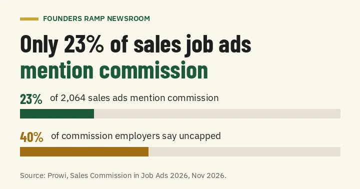
Only 23% of sales job ads mention commission, and none explain clawbacks
Prowi read 2,064 open sales job ads from 776 employers in Europe and North America on November 2, 2026. 23% of the ads mention commission, OTE or variable pay. 40% of employers that advertise commission call it uncapped, only 5 of 198 mention accelerators, and none of the 480 commission ads explain clawbacks. Before you post your first seller role, write the commission rules in one short paragraph a candidate can read before the first call.
Prowi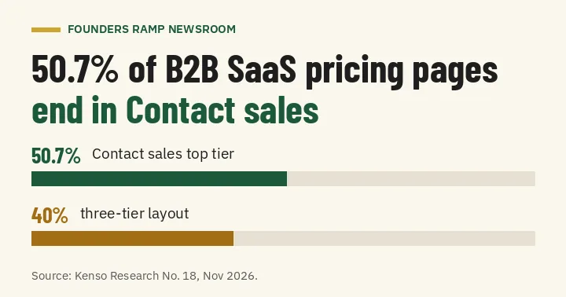
Half of B2B SaaS pricing pages end in a Contact sales tier
Cristian Frunze at Kenso read 4,916 B2B SaaS pricing pages from a September 2026 crawl. 50.7% end in a Contact sales top tier, 40.0% list three tiers, and 48.3% of priced pages use at least one charm price. At companies with 1 to 10 employees, 90.2% publish a price, and at companies with 1,001 or more the share is 65.7%. Before your first seller starts, decide which plan a buyer can buy without a call, and put that choice on the page.
Cristian Frunze (Kenso)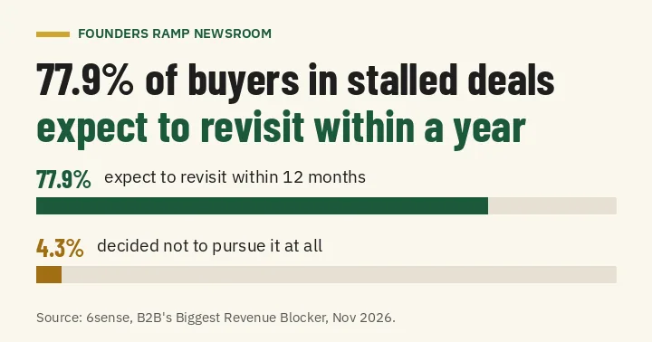
77.9% of buyers in stalled B2B deals expect to revisit the purchase within a year
6sense surveyed 2026 B2B buyers about evaluations that ended with no purchase. Those evaluations ran 8.6 months on average before stalling. 77.9% of those buyers expect to revisit within 12 months, and only 4.3% decided not to pursue the purchase at all. 64.4% of buyers in abandoned evaluations reported difficulty building the business case for the category. Before your first seller starts, give every stalled deal a dated follow up and one page that makes the case for the category.
Kerry Cunningham and Sara Boostani (6sense)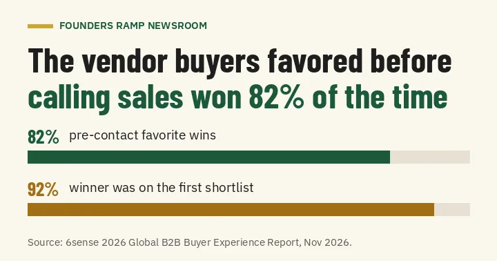
B2B buyers pick the vendor they already favored before talking to sales 82% of the time
6sense surveyed 4,611 recent B2B buyers for its 2026 buyer experience report. Buying groups spent about 60% of an average 10.3-month cycle choosing before they contacted a seller, and 92% of eventual winners were on the first shortlist. Your first seller will close faster if buyers already know your name, so start showing up where your buyers learn before you hire.
6sense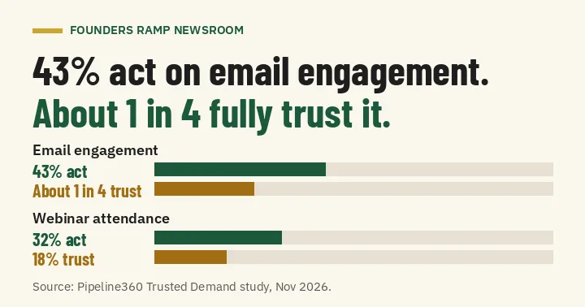
43% of B2B teams act on email engagement, and only about one in four fully trust it
Pipeline360 asked 526 marketing and sales leaders which buyer signals they act on and which they trust. 43% act on email engagement while about one in four fully trust it, and 32% act on webinar attendance while 18% trust it. 62% of self-rated top performers combine several signals before acting, against 45% of other teams. Before your first seller starts, agree on which two or three signals earn a call.
Pipeline360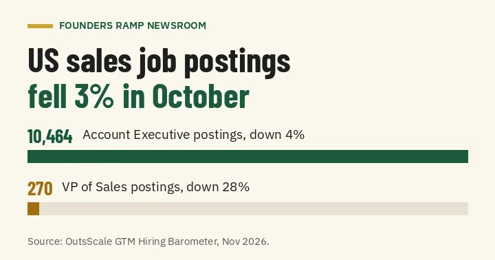
US sales job postings fell 3% in October, and Account Executive postings fell 4%
OutsScale counted 146,627 US sales roles posted from Oct 2 to Nov 1 on the Adzuna job index, 3% fewer than the month before. Account Executive postings fell 4% to 10,464, and VP of Sales postings fell 28% to 270. Fewer postings means fewer companies chasing the same sellers, so this is a good month to open your first-seller search.
OutsScale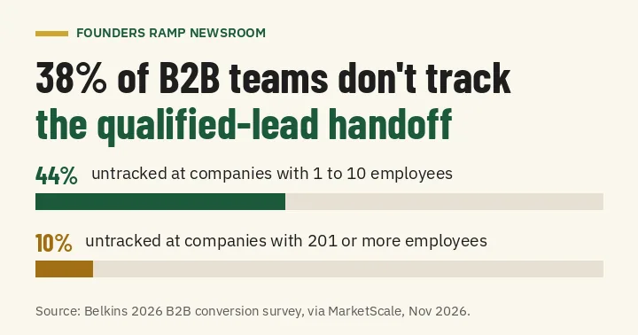
38% of B2B teams don't measure how many qualified leads become sales-ready
Belkins asked B2B teams about four funnel stages: the median win rate was 21 to 30%, and 38% of teams don't track the step from marketing-qualified to sales-qualified lead. At companies with 1 to 10 employees, 44% leave that step untracked, against 10% at companies with 201 or more. Start counting that one step every month before your first seller starts, so they inherit a real number.
Belkins (via MarketScale)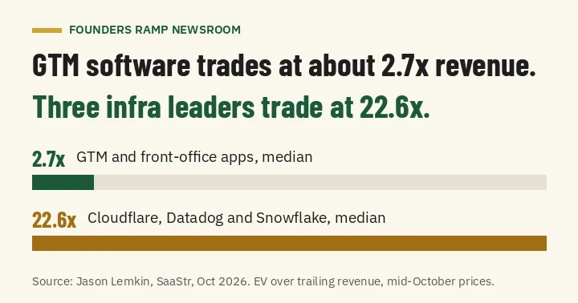
The B2B category the markets hate the most today: GTM
Jason Lemkin compared revenue multiples at mid-October prices: public GTM and front-office apps trade at a median of about 2.7x revenue, against 22.6x for Cloudflare, Datadog and Snowflake. Braze and CrowdStrike both grew 26%, and Braze traded at 3.7x while CrowdStrike traded at 42.6x. His advice to GTM founders is to charge on usage or outcomes, because revenue tied to a customer's headcount falls when agents cut that headcount.
Jason Lemkin (SaaStr)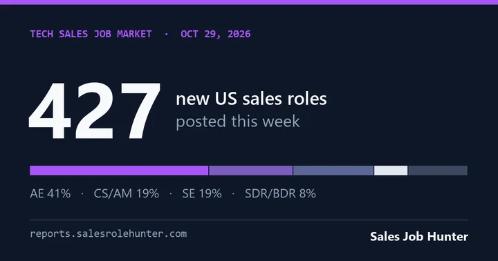
427 new US tech sales roles in a week, and 57% of open roles are 45 days old or more
Sales Job Hunter counted 427 new US tech sales roles posted in the seven days to Oct 28: 175 were Account Executive seats, and SDR and BDR roles were 8%. Of the 3,881 open roles it tracks, 2,208 (57%) have been up 45 days or more, and it tells sellers to skip those and apply the day a role goes up. If your first-seller posting has been live for weeks, refresh it.
Sales Job Hunter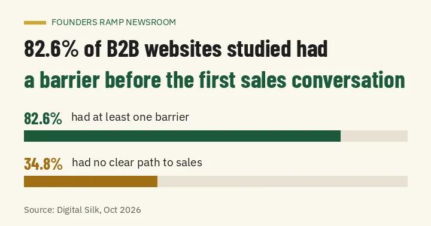
4 in 5 B2B websites are losing buyers before they even ask for a quote
Digital Silk reviewed 46 B2B client websites before redesigning them: 82.6% had at least one barrier that kept buyers from asking for a quote, a demo, or a sales conversation, and 34.8% had no clear path from key pages to that conversation. Open each of your product pages and check that a buyer can ask for a call in one click.
Digital Silk92% of organizations claim AI delivered improved customer experience, only 27% can prove it
Metric Sherpa and Sprinklr surveyed 807 US marketing, service, and customer experience staff. Among those with AI in live use, 92% said it met or beat expectations, and 27% could put a precise number on the result. When a buyer says their current tool works, ask what number they recorded before it went live.
Sprinklr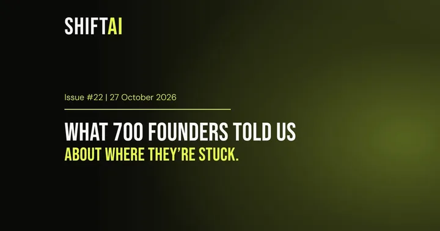
What 700 founders told us
Shift AI asked founders at its Europe event what their biggest challenge is right now: 41% said go-to-market, ahead of agentic workflows at 31%, positioning at 27%, and pricing at 21%. Write down what each buyer says on your calls, in their words. That record is what your first seller will learn from.
Alex Theuma (Shift AI)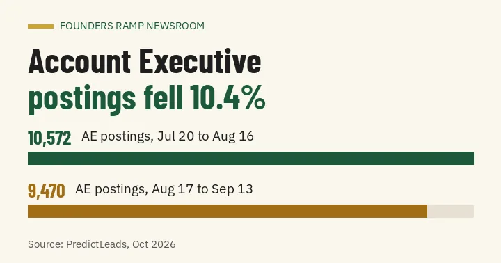
Fewer US companies are hiring salespeople, and those still hiring posted more roles each
PredictLeads counted new US B2B sales job postings from August 17 to September 13: total postings fell 5.6%, Account Executive postings fell 10.4%, and companies with 11 to 50 employees lost 19.8% of their hiring employers. If you are hiring your first seller, fewer small companies are posting for the same people right now.
Robert Fon (PredictLeads)Large enterprises report spending more than a quarter of their software budgets on changes they would not have chosen
Origina surveyed 2,018 senior IT leaders at big US and UK companies: 78% said their main software vendor sets the timing and terms of change, and on average 28% of their software budgets go to changes they would not have chosen. Ask a big-company buyer early what a vendor is making them change next year, and when, so you know when their people and budget are tied up.
Origina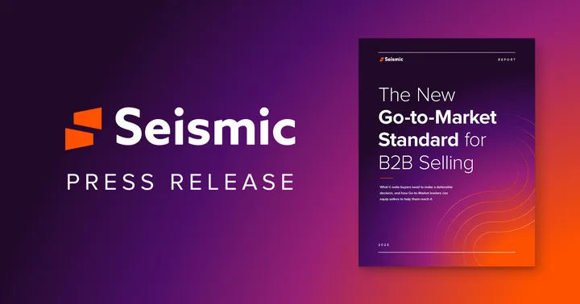
75% of B2B leaders trust human guidance over AI when the two conflict
Seismic surveyed 200 senior leaders who choose or pay for sales software: 75% said they trust a person over AI when the two disagree, and 34% turn to a vendor's rep or an expert to check claims they saw elsewhere. On your first call, ask what the buyer has already read or heard about you, then confirm what is right and fix what is wrong.
Seismic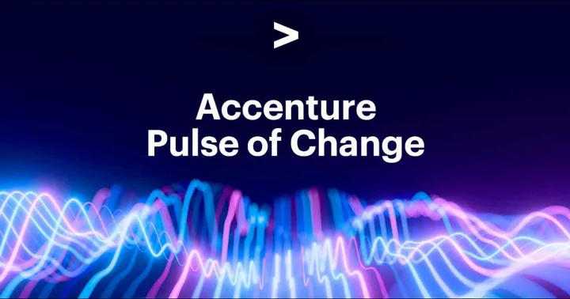
Pulse of change
Accenture surveyed 3,000 C-suite leaders and 3,000 employees at companies with more than $300 million in revenue: daily AI use jumped since July, but only 25% see widespread, lasting value, and 53% of leaders expect measurable returns within 12 months. On your first call with a buyer, ask how long the work takes today and write their answer down.
Accenture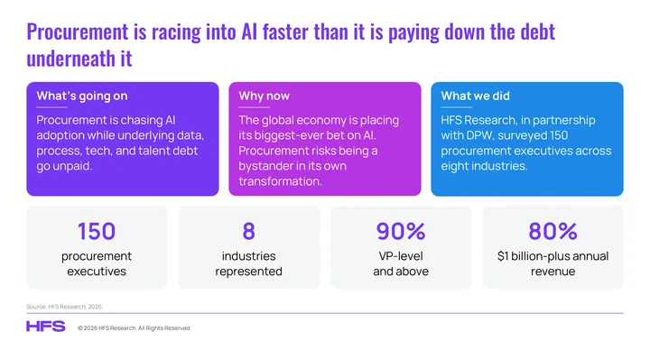
AI is ready. Procurement is not.
HFS Research and DPW surveyed 150 procurement executives across eight industries. Only 18% said procurement owns the decision on AI vendors, and 76% said AI decisions bypass procurement at least occasionally. On your next call with a company that wants to buy, ask how they bought the last tool like yours: who signed it, who reviewed it first, and what came up at the end.
HFS Research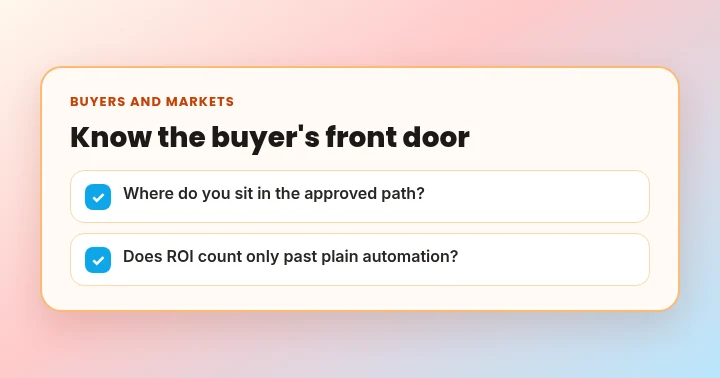
Workday Rising - customers press customers on AI adoption and ROI, and get answers
At Workday Rising, Carlyle said it stopped employees pasting review feedback into ChatGPT and made one legal-approved version firm-wide, and Caterpillar is still picking the employee front door. If you sell software people use at work, know where you sit in their approved path and show ROI past plain automation.
diginomica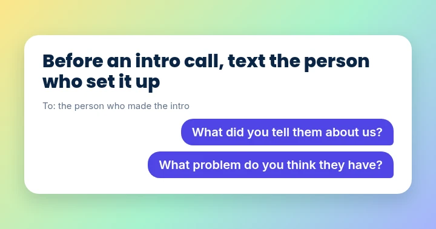
What's working in B2B GTM in 2026
A survey of 300 software companies found the founder is still the main seller at 44% of companies under $1M in revenue, and introductions from people you know work better than any other channel. Before an intro call, ask the person who set it up what they told the buyer and what problem they think the buyer has, then open the call with it.
Growth Unhinged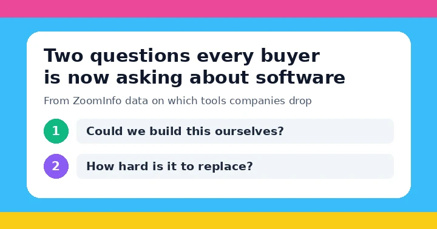
The SaaSpocalypse is real, if you're not a system of record
ZoomInfo data shows companies under 100 people now drop one-job tools four times as often as a year ago, while companies over 10,000 people have not changed. Expect every buyer to ask whether they could build it and how hard yours is to replace, and answer with the companies and systems that already run on you.
ZoomInfo via Stacker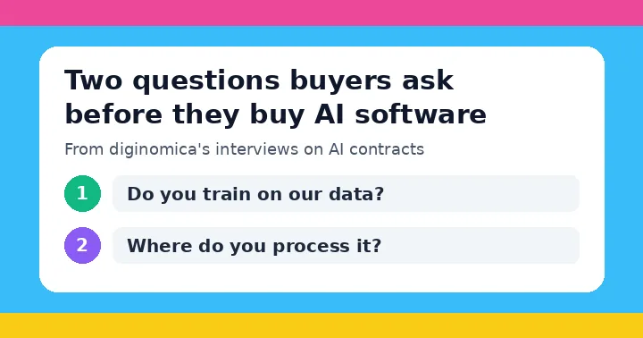
No silver bullet for AI contracts - what buyers need to do instead
Enterprise buyers of AI software now open with two questions: do you train on our data, and where do you process it? Answer both on one page, beta features included, and send it before the first call.
diginomicaCredit Grant and Expiration Policies in Enterprise SaaS Contracts
Hybrid SaaS deals now mix seats and usage credits, and unused monthly credits at Adobe Firefly and Microsoft Security Copilot reset to zero. Write the expiration rule into the order form, and review their unused balance with them 90 days before renewal.
The Closed Books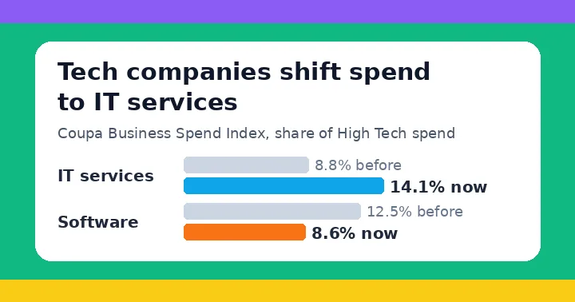
Coupa's Latest Q3 Business Spend Index Report Finds Spend Held Firm Through Six Months of Market and Tariff Shocks
Inside tech companies, IT services rose from 8.8% to 14.1% of spend while software's share fell from 12.5% to 8.6%. Buyers are paying for the people who make new tools work, so spell out who does each setup step and by when.
Coupa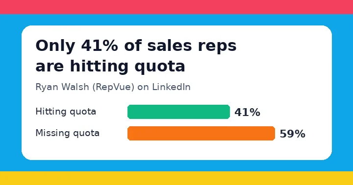
Only 41% are hitting quota
The reasons on this list are company decisions: raised targets, extra reps in a crowded territory, cut marketing, three sales VPs in four years. Good sellers check quota attainment before they join, so know yours before you hire.
Ryan Walsh (RepVue)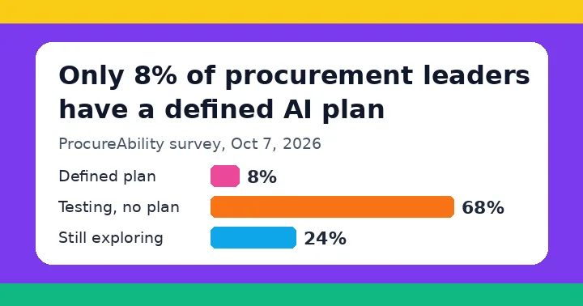
Survey: 68% of Procurement Teams Test AI Without a Formal Plan
Only 8% of the procurement leaders ProcureAbility surveyed have a defined plan for AI, and 47% say it is hard to tell useful tools from overhyped ones. A demo on clean sample data blends in, so run one real, messy example of theirs through your product while they watch.
24/7 Staff (Supply Chain 24/7)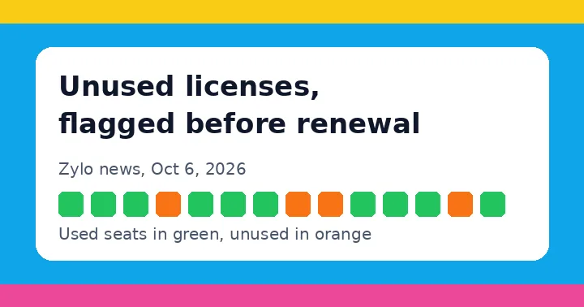
Zylo Ushers in a New Era of Agentic SaaS Management
Big companies can now ask Zylo, in plain English, for every unused software license before a renewal. That list can reach your buyer's boss before you hear anything, so check who stopped using your product well before renewal and call them.
Zylo (PRWeb)Orchestration extended: SAP to sell ORO Labs platform
SAP will brand, sell, and support ORO Labs' procurement software, so SAP customers can buy it through the relationship they already have. Most startups first have to get set up as a new vendor, so ask early how long that takes.
Annette Slunjski (SAPinsider)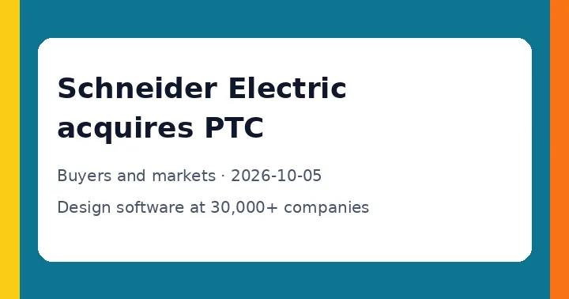
Schneider Electric acquires PTC for 22.6 billion
PTC's design and product data software runs at more than 30,000 companies, and the deal is not expected to close until the third quarter of 2027. Every one of those customers now has questions about support, roadmap, and renewal.
Berry Zwets (Techzine Global)Mastercard and BMO pull payments inside enterprise software
Card payments now run inside the ERP, procurement, and accounts payable tools finance teams already use. Ask early which system your product has to live inside.
Molly Snaylam (FinTech Global)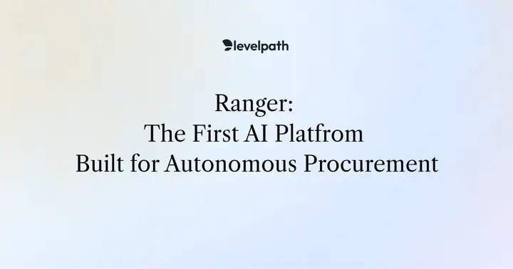
Ranger: The First AI Platform for Autonomous Procurement
Sourcing, contract review, supplier risk, and invoice approval now run as one connected process. A deal that lives in one inbox still has to clear every one of them.
LevelpathThe Most Common Go-to-Market Questions This Expert Gets from Early Founders
An ICP that is still a company-size guess will fill the calendar with mismatches. Score first calls. Define ICP by operational signals.
Emery RosanskyStop Looking For Sales Magicians
A founder hunting a sales magician is usually hunting someone else to finish the motion. Stay in the conversations until the pitch and the next step are already proven.
Jason LemkinPipeline mega-post
A founder talking to one or two buyers a week has a calendar problem, not a product problem.
Rob Snyder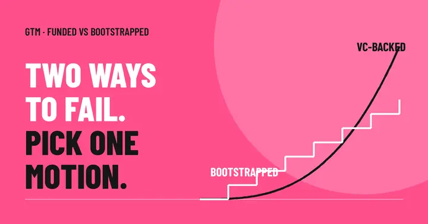
How VC-Funded SaaS GTM Strategies Differ From Bootstrapped Ones
VC-backed GTM and bootstrapped GTM fail in different ways. Same founder job either way: pick one motion and measure it before you scale spend.
Sharné McDonald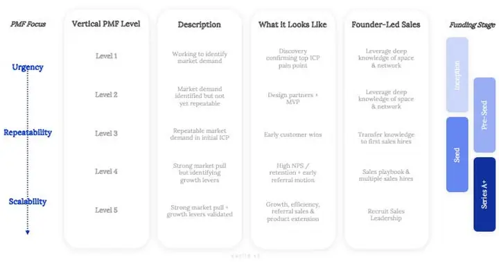
The Truth About Founder-Led Sales
Founder-led sales is strategy, not a phase you graduate from. The first year GTM mistakes are usually about who stays close to the buyer.
Euclid VenturesThe questions that sell
Best sellers are 69 percent stronger at synthesis. They hand the buyer their problem back clearer than the buyer gave it.
Chris Orlob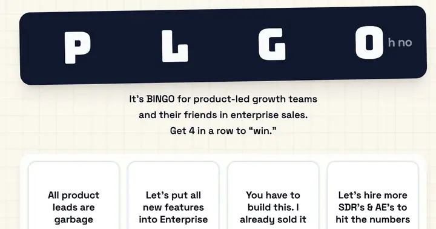
Congrats, your sales problems in PLG are completely unoriginal
The first $100K enterprise deal is not a reason to abandon the product motion that created it.
Elena VernaPost Positioning: Testing and Execution
Test positioning in live sales conversations, not on the homepage. A homepage test cannot tell you why a buyer picked you this week.
April Dunford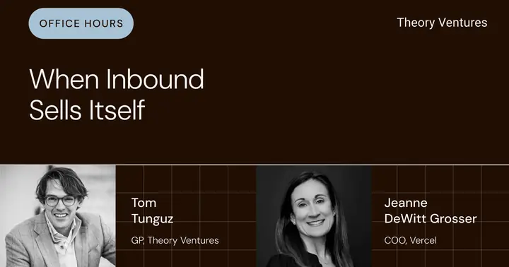
When Inbound Sells Itself
Vercel cut inbound SDRs from 10 to 1.25. The bottleneck is the written workflow, not the model.
Tomasz Tunguz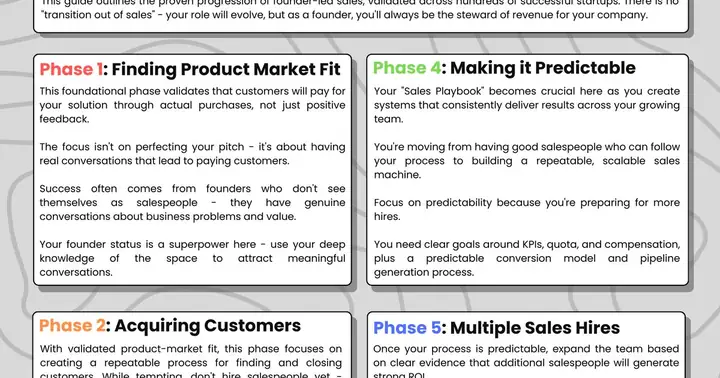
There is no transition out of sales as a founder
Roles change. One founder stays the steward of revenue. Six phases from first customers to a sales leader.
Kyle Poyar with Seth DeHart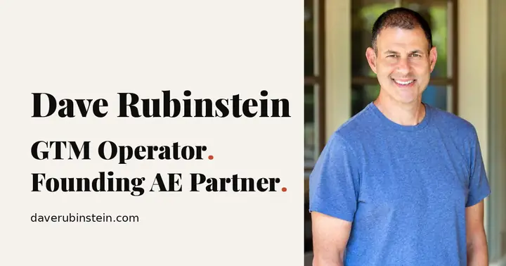
Founder-Led Sales Transition Framework
If you hired sellers and you still close every deal that matters, you skipped the middle.
Dave Rubinstein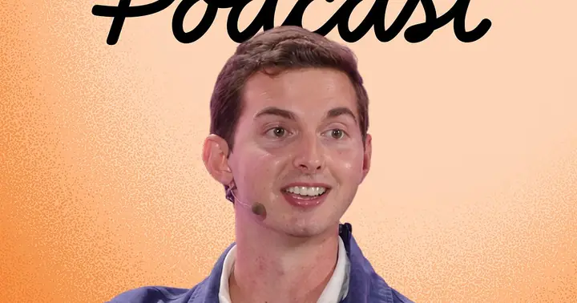
How SpaceXAI Built Grok Bot in a Month
Grok Bot was developed from concept to launch in seven weeks.
Roman Ugarte (Lenny Rachitsky)Champion Change: You Gotta Jump On It
Big Co Customers change champions frequently over time.
Jason Lemkin (SaaStr)AI-Driven B2B Marketing with Latané Conant
AI can predict customer behavior and personalize marketing efforts.
Latané Conant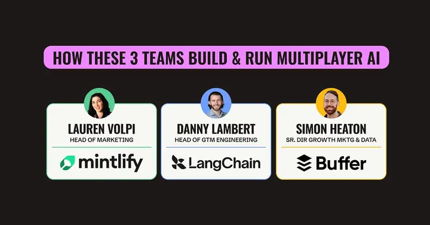
Multiplayer AI Setups Mintlify, LangChain, and Buffer
Context layers, skills, and agents built by real teams.
Emily Kramer (MKT1)AI Agents for Customer Service with Latané Conant
Customer service should not be viewed solely as a cost center.
Latané Conant (6sense)If you're a founder brushing up on Sales 101
Provides guidance on identifying and nurturing best customer relationships.
First Round ReviewThe One Thing That Everyone May Be Too Busy to Worry About: Winning
Highlights the need to track market share.
Dave Kellogg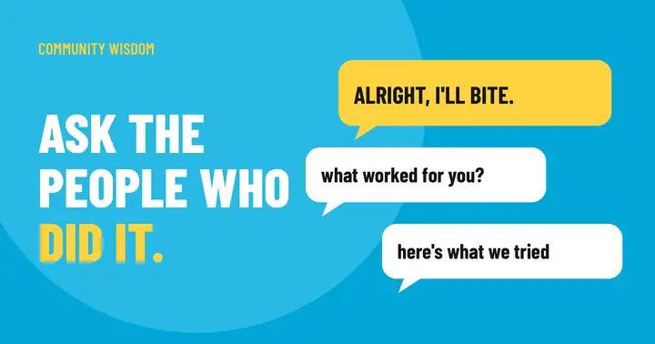
Alright... | Will Allred
Community-driven wisdom and advice.
Will Allred (Lavender)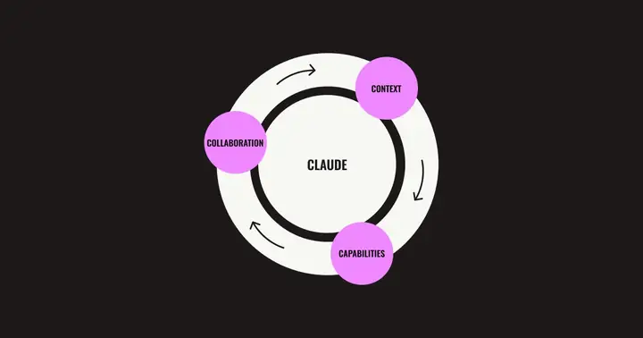
Marketing teams are stuck in single-player Claude mode. Here's how to go multiplayer.
4 Cs framework for sharing context and skills across the team.
Emily Kramer (MKT1)Clouded Judgement 8.21.26 - What Could Go Right?
Overall median 4.3x EV/NTM revenue. Top 5 median 30.5x. High-growth median 17.2x.
Jamin Ball (Clouded Judgement)You're Losing Hundreds of Thousands of Dollars Because of Poor Sales Onboarding
Missed or slow sales after a hire is opportunity cost, not a training nicety.
Peter Kazanjy (First Round Review)9 Steps to Repeatable, Scalable, and Profitable Growth
9-step model covers product/market fit and GTM strategy.
David SkokBoard Meetings: Your Notetaker Is Not Welcome Here
AI notetakers are discouraged from board meetings.
Dave Kellogg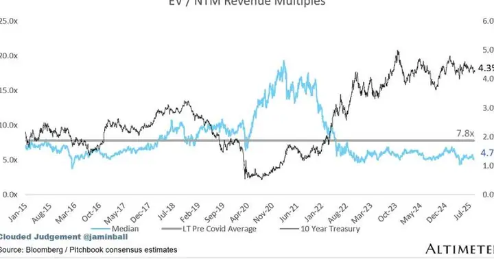
Jamin Ball - Clouded Judgement 8.15.25
Median software multiple: 4.7x, High Growth software median: 30.5x.
Jamin Ball (Clouded Judgement)The twilight of the chatbots
AI is transforming how tasks are performed and managed in organizations.
Ethan MollickWhat it feels like to work with Mythos
Advanced AI like Claude Fable represents a significant leap in capability.
Ethan MollickNo posts match.
Get The First Seller
As a thank-you you get three worked examples of when a first sales hire pays back.
We'll email you the examples. Unsubscribe any time.
From the person who was on Workiva's Founding Sales Team at zero customers.
Thanks. Here are your three worked examples:
That did not go through. Please check your email address and try again, or write to jw@foundersramp.net.
Get a 30 minute look at your pipeline with Justin. No pitch.